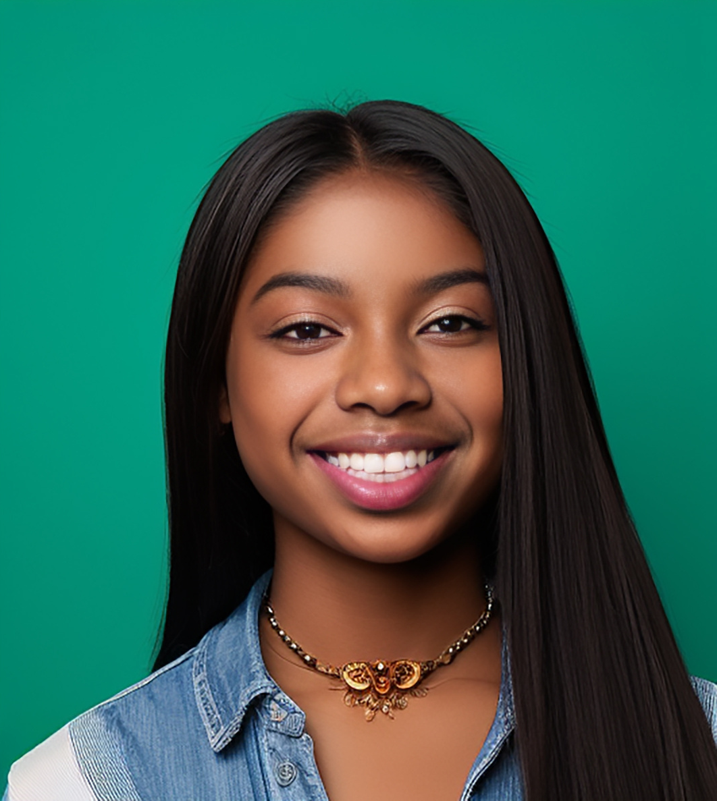

I love archery, but sometimes it's hard to tell if I'm actually getting better.
Riley is a young archer who practices regularly and enjoys the sport, but often struggles to understand their own progress. Paper scorecards get lost, and fluctuating results make it difficult to stay motivated. During competitions, Riley feels pressure and sometimes loses focus, wishing for tools that could help with mental preparation and confidence. A clear, supportive way to track improvement would help Riley stay engaged and excited about archery long‑term.